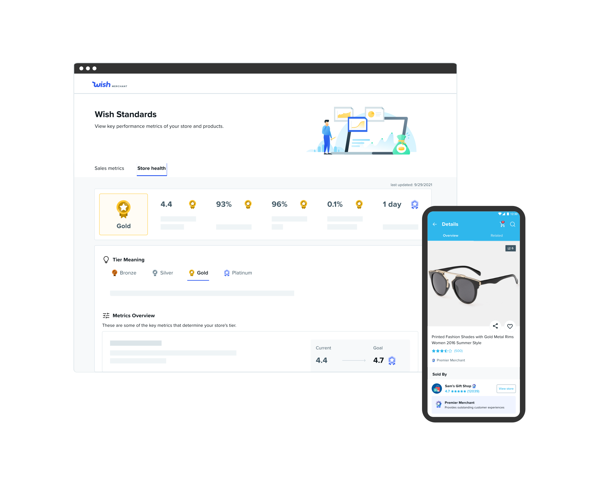
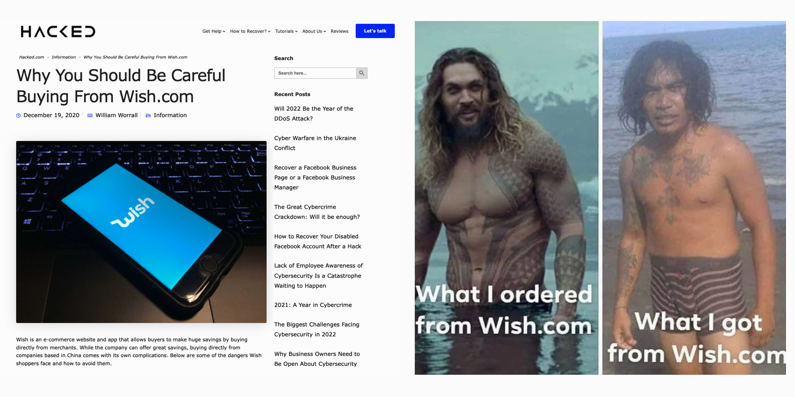
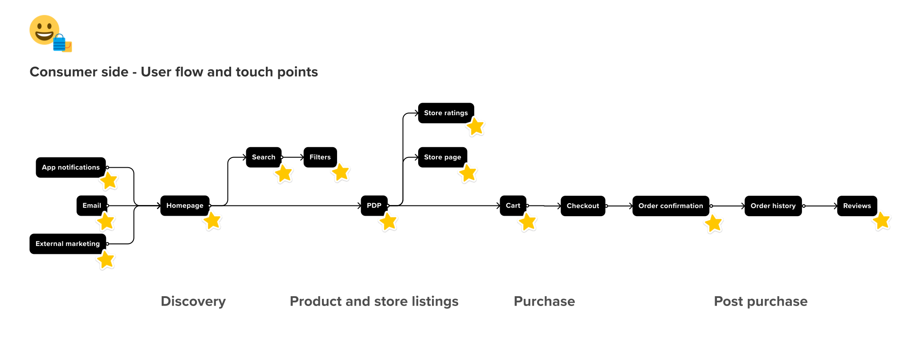
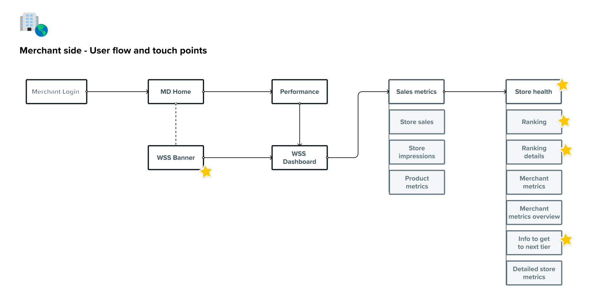
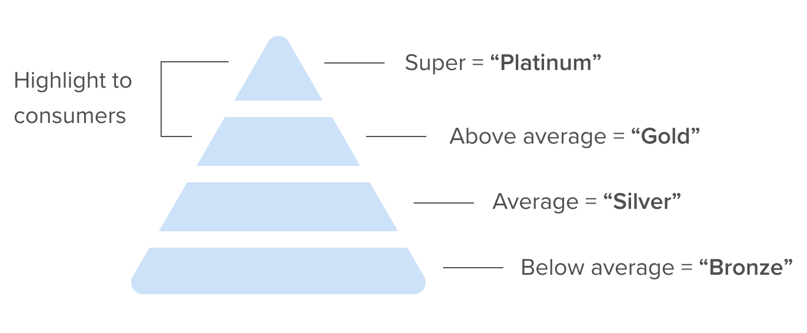
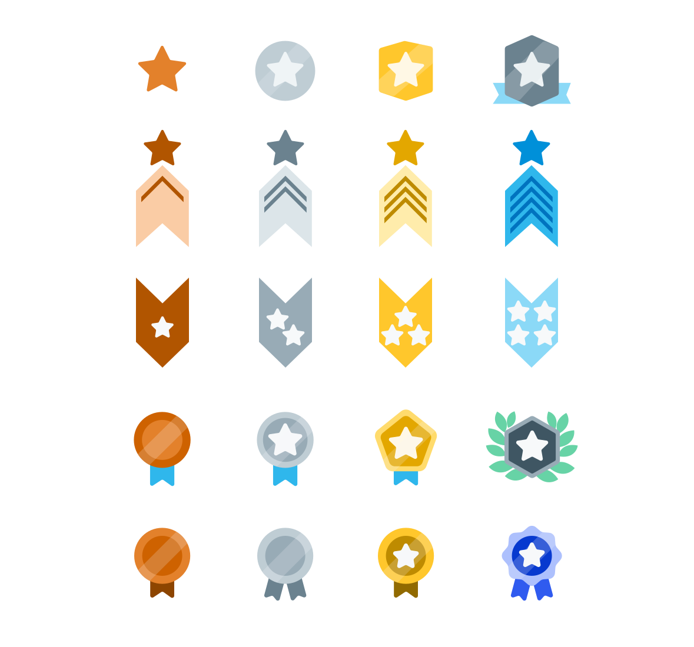
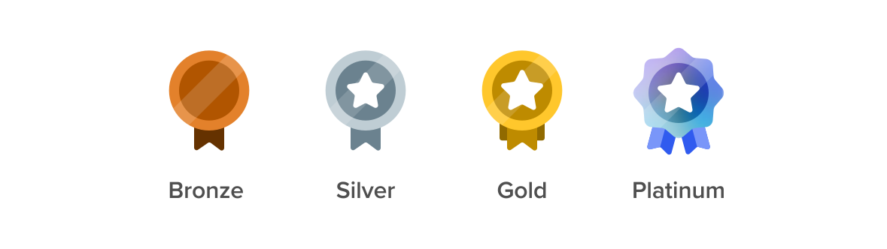
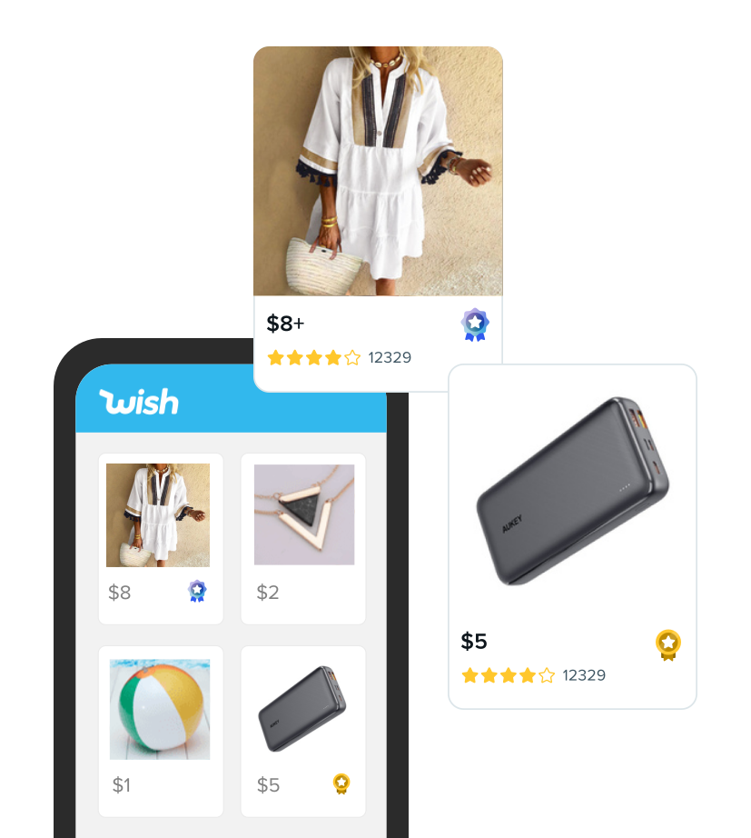
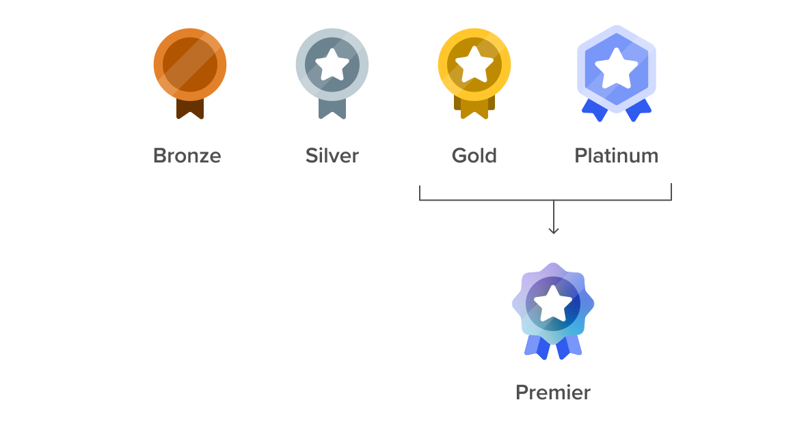
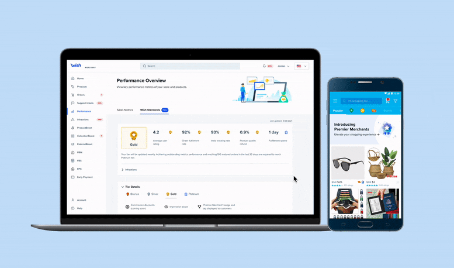

As part of a company-wide initiative to improve customer trust, I designed the badging system used to standardize seller quality levels.

Wish.com is notorious for its inexpensive products, questionable quality, and long delivery times. Customers buy the products at unbelievable prices only to receive their orders and discover that it’s not what they ordered. With these types of situations happening often, customers understandably have extreme distrust and skepticism in the Wish.

The low product quality is largely due to Wish’s unclear selling expectations and merchants’ lack of incentives to offer a good customer experience. As part of the turnaround strategy to improve merchant quality and consumer trust, Wish introduced a new seller standards program.
Merchants are ranked on several criteria (ex: average user rating, valid tracking rate, delivery rate) and are placed on one of four tiers. “Super” and “Above Standard” merchants are rewarded with higher pay out and impressions while merchants on lower tiers are strongly encouraged to improve their store performance before they are taken off the platform.
To launch the seller standards program and ensure a seamless experience on the merchant and consumer sides, my design colleagues and I took on different projects during Fall 2021 to launch this initiative.
After we created the tier system, I focused on creating a seller trust tier system via badging that would:
Visually communicate the merchant’s standing and store performance
Highlight the trustworthy sellers and give the consumers confidence to make a purchase
Working together with the consumer designer, we brainstormed when it would be the best time to surface the badges in the Wish app during the customer journey from discovery to viewing product and store listings, to purchase, and to post purchase.

I worked closely with the merchant designer on a similar exercise to understand the context of how a seller would encounter the badges on the merchant platform.

Considering how merchants and consumers would interact with the badges, I created defining principles that I thought would make a good badge and questions that would help me decide a direction:
It needs to stand out among the product listing and other badges. How might we use color, size, or animation to call out a badge among the myriad of visual elements?
It needs to be clear. What can we do to help merchants and consumers undestand the badge? How could we incorporate universal symbols and colors or possibly use text?
It should be scalable. How could we use color, shape, and stroke to establish hierarchy?
It should be simple. How could we keep the badges distinguishable even if it’s small in size?
From there, I worked with the UX writer and PM to work out the details of the badges and we decided to names the four tiers “Platinum,” “Gold,” “Silver,” and “Bronze” because this was a common system in other platforms, especially games. We also agreed to highlight the Platinum and Gold tier merchants in the Wish app as a way to celebrate their store performance.

With that information in mind, I brainstormed different approaches we could take with the badges, focusing on color, shape, and complexity to communicate trust and create hierarchy.

After reviewing with visual communication and product designers, getting feedback, and reiterating on the badges so that the “Platinum badge stands out more than the Gold,” I landed with the following designs:

We wanted to make sure that the badges achieved our initial goals so the user researcher tested with 10 consumers to understand their reaction to the platinum and gold badges. During user testing, we discovered that:
Products with badges were perceived as higher quality
Products without badges were approached with caution but did not deter consumers from purchasing
Consumers were unable to distinguish Gold and Platinum tiered merchants
While the badges did conveyed trust and quality, it was not obvious which tier was higher.

With that user feedback in mind, I decided revisit the designs and think of ways we could improve the badges so that consumers don’t have to exert extra effort to understand the platinum and gold tier levels. Some questions I had:
Should we rely more on helper text to explain the difference?
Should we rename the badges so that there was a more universal tier leveling system?
Should we combine the gold and platinum tier merchants and use a single badge to highlight good sellers?
The last question made me think,
Do consumers need to know the difference between the gold and platinum merchants?
The reason why we were showing both the gold and platinum badges was because we wanted to give merchants the recognition for their different tier levels. But if a consumer is using the badges to make a purchase, do they really need to know whether it’s a gold or platinum merchant, when usually what distinguished the two was a small percentage difference in specific criteria in our model?
As part of this project, I had to find the right balance between rewarding the top performing merchants and helping consumers easily identify these good actors.
In the end, I turned a four tier system into five badges.
On the merchant side, I kept the four badges as a way to keep the distinction between each of the levels and use it as a way to gamify the experience and help merchants continuously strive to be better.
However, on the consumer side, I abstracted away the tier information and combined the Gold and Platinum merchants into “Premier merchants.” Consumers would be able to identify quality merchants through a single badge.

I’m happy to say that the seller program has launched along with the badges. The badges were designed in two weeks from start to end and they’re now visible to over 500 thousand merchants and 24 million consumers.
Merchants are able to see their tier level and corresponding badge inside their performance dashboard while consumers can purchase good with more confidence.

We have received positive feedback from both merchants and consumers during more user testing testings. Merchants have said that the badges help clarify their seller levels and consumers have expressed appreciation on how Wish identifies quality sellers.
One of the things that happen after such a big launch with a lot of visibility is that there are some people who weren’t necessarily involved in the process or have a background in design but express strong feelings about it.
From the situation I encountered with a VP, I learned that as a designer if I believe it is a good design, I have to stand by what I make and provide the context to help others understand.